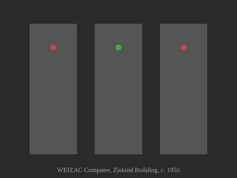
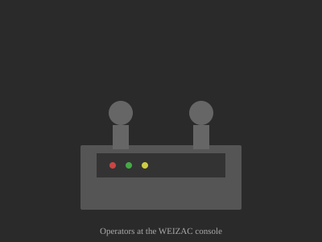
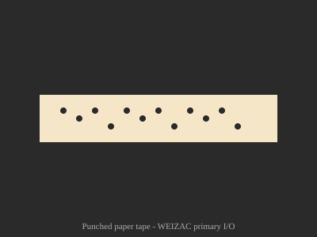

VEIZAC
The WEIZAC Computer: History and Simulator
The WEIZAC (Weizmann Automatic Computer) was Israel's first computer, completed in 1955 at the Weizmann Institute of Science in Rehovot. Based on the IAS architecture designed by John von Neumann at Princeton, it was built largely from schematics — without access to many standard parts — by a small team of dedicated scientists and engineers in the basement of the Ziskind Building.
Key facts: 40-bit word length, 21 instructions, 1024 words of magnetic drum memory (later expanded to 4096, then 12,288 words). It operated from 1955 until its retirement in 1963, performing groundbreaking calculations in tidal prediction, quantum mechanics, and numerical analysis.



Credits & References
Images are illustrative representations. Historical photographs courtesy of the Weizmann Institute Archives.